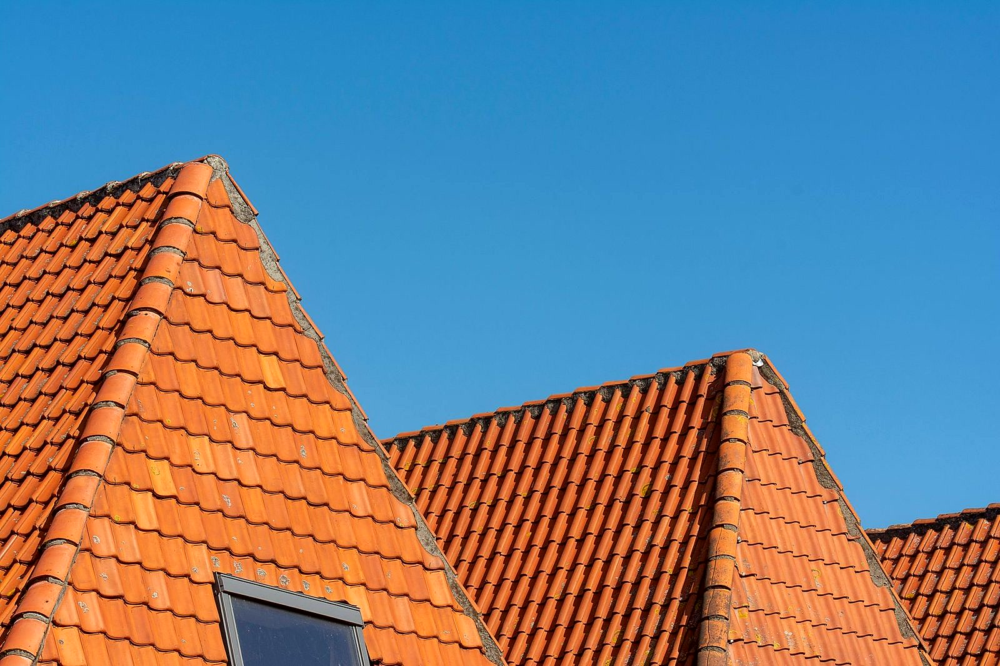
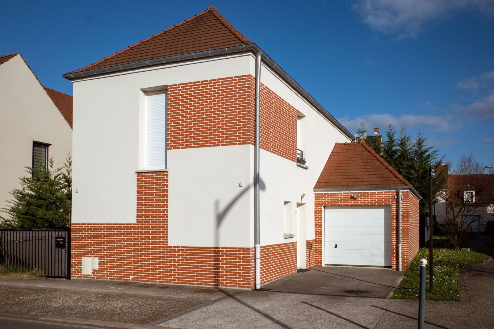
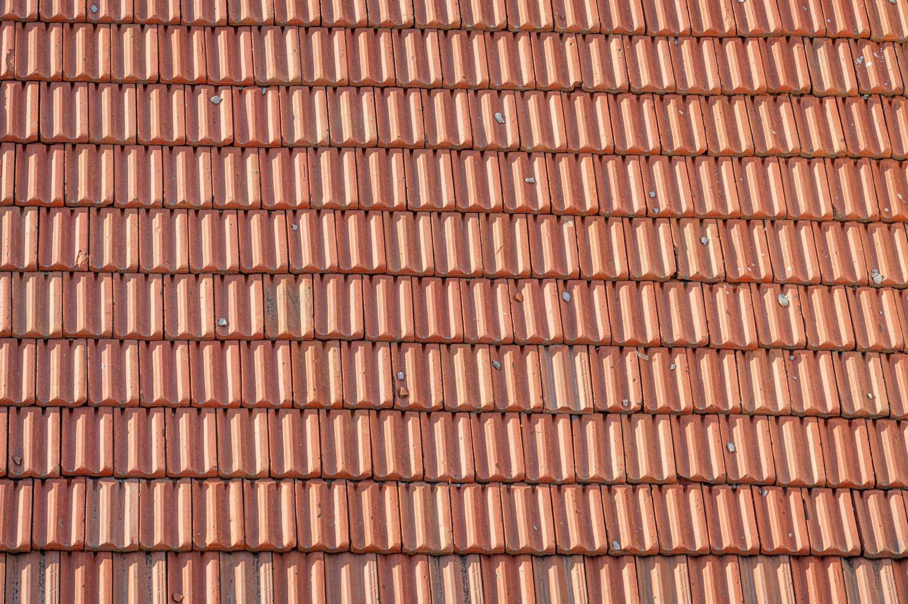
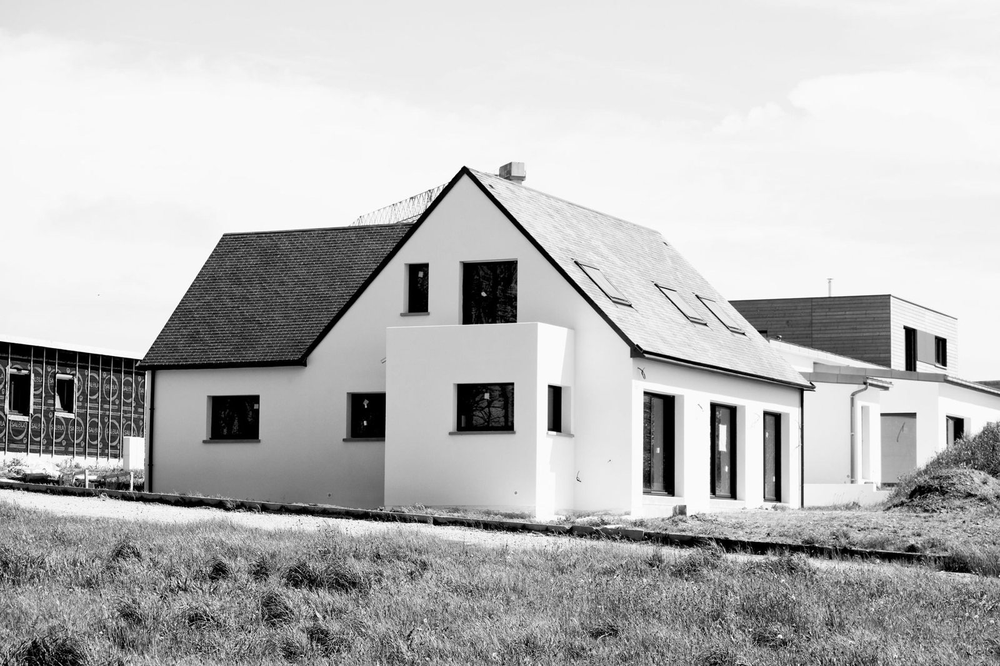
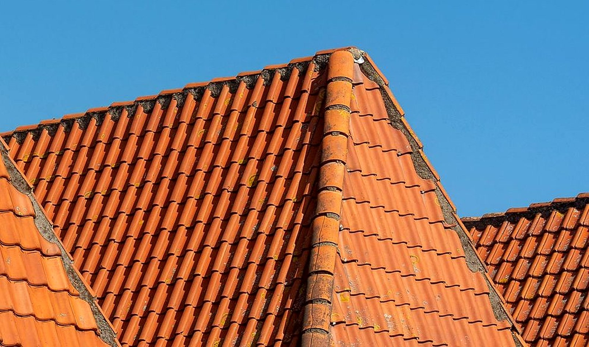

Od więźby po rynny

Pokrycia dachowe
Stare pokrycie do zdjęcia albo nowy dom czeka na dach? Kładziemy blachodachówkę, dachówkę ceramiczną i betonową oraz blachę na rąbek - z membraną, łatami i kontrłatami, nie samą blachę na stare deski. Pokrycie dobieramy do kąta połaci i konstrukcji, a nie do tego, co zalega w hurtowni.

Remonty i naprawy dachów
Dach ma swoje lata, ale rzadko wszystko naraz jest do wymiany. Przekładamy dachówkę, wymieniamy skorodowane kosze i obróbki, uzupełniamy łaty i membranę tam, gdzie faktycznie puściło. Po zejściu z dachu mówimy wprost, co jeszcze pochodzi, a co od odkładania tylko drożeje.

Więźba dachowa
Zmieniasz pokrycie na cięższe albo adaptujesz poddasze? Zanim na dach wjedzie dachówka, sprawdzamy, czy więźba to udźwignie - liczy się przekrój i rozstaw, nie dobre chęci. Wymieniamy podgniłe krokwie i murłaty, wzmacniamy wiązary tam, gdzie trzeba - i dopiero wtedy zamykamy dach na dobre.

Rynny i obróbki blacharskie
Rynna przelewa się w jednym miejscu albo odchodzi od okapu? Ustawiamy spadki na nowo, wymieniamy skorodowane odcinki i poprawiamy mocowania, zamiast od razu sprzedawać całe orynnowanie. Obróbki komina, kosza i okapu robimy z blachy dobranej do pokrycia - dach wygląda na skończony, bo jest skończony.

Okna dachowe i podbitka
Montujemy okna dachowe w nowych i istniejących dachach - z kołnierzem dobranym do pokrycia, bo to kołnierz decyduje o szczelności, nie sama szyba. Od środka zostawiamy wykończone szpalety, nie dziurę w skosie. Montaż jednego okna zamyka się w dzień. Poddasze dostaje światło, a Ty spokój przy deszczu.

Dachy płaskie i papa
Garaż, taras albo płaski dach nad domem? Zgrzewamy papę termozgrzewalną i układamy membrany z wyprowadzonymi spadkami, żeby woda nie stała w kałużach na środku. Stare, spękane warstwy zrywamy albo zostawiamy jako podkład - zależnie od tego, co pokaże odkrywka, nie od widzimisię.
Która z usług Cię interesuje?
Napisz, co chcesz zrobić - odpowiemy z propozycją i wyceną.